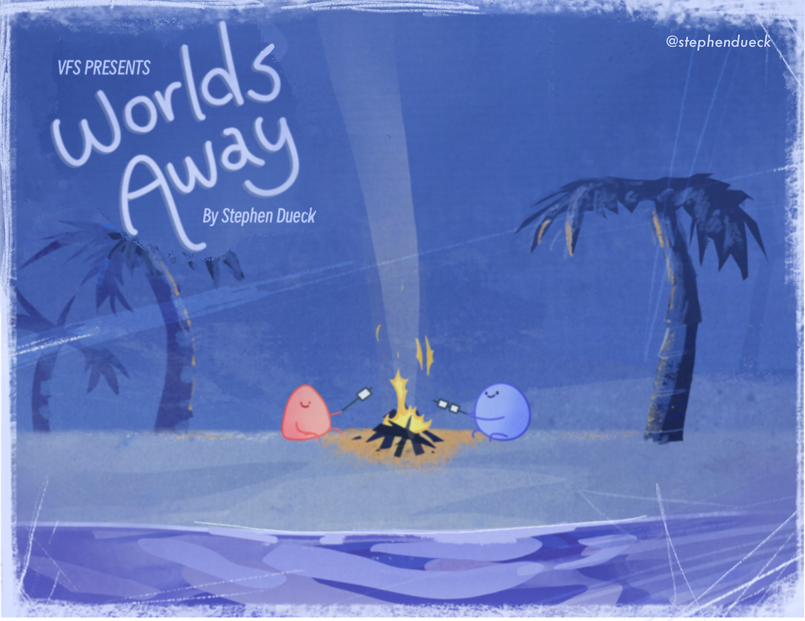
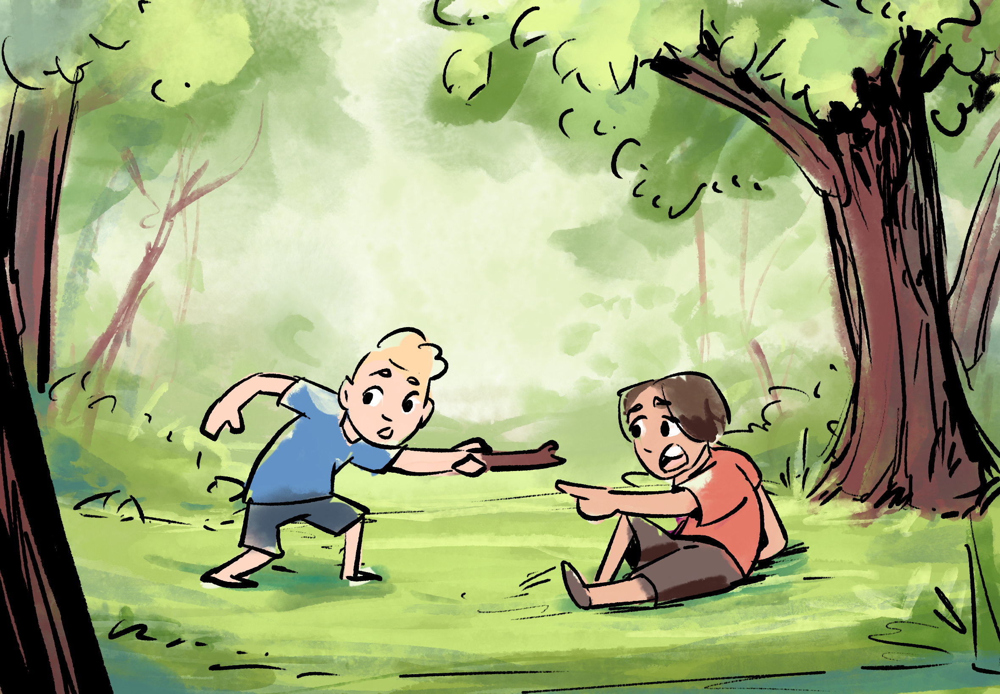
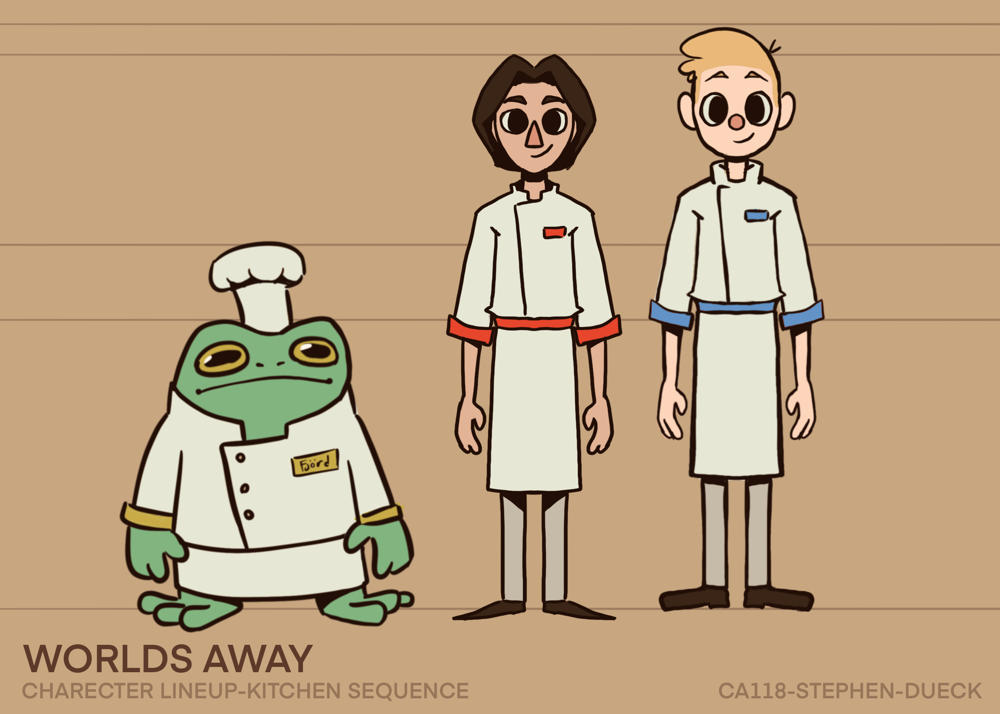

“Worlds Away” is my final film from Vancouver Film School and was such a joy to create. It is a combination of the things I love: friendship, nature, imagination, conversation, cooking, and adventure.






